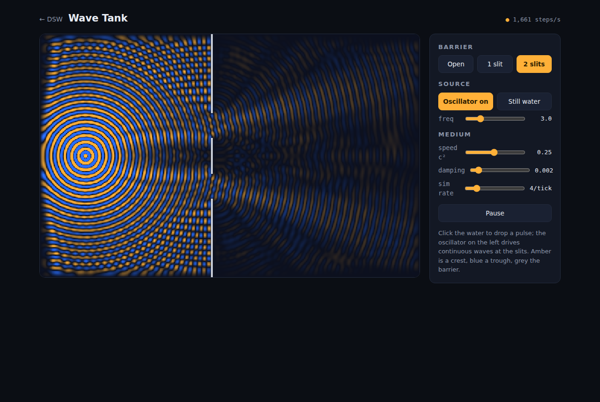
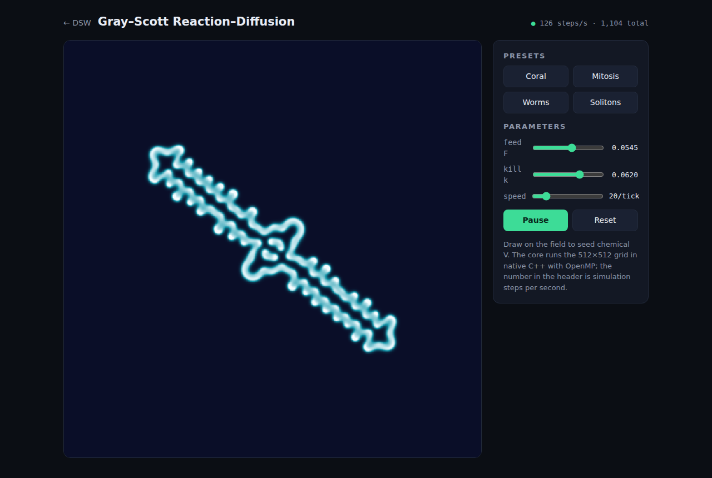

Drop-in plugins
An experiment is a folder: a compiled C++ core, an HTML front-end, and a small metadata card. Installing it means copying the folder into plugins/ and refreshing the launcher — the one thing VST3 gets right, kept, minus the audio-shaped API.
The browser stays the GUI
Front-ends are ordinary HTML/JS pages — the same ones prototyped on this site port with their controls and styling intact. A tiny shim (dex.js) relays JSON controls and blits RGBA frames to a canvas, one frame per display refresh.
Native speed
The simulation core is plain C++ behind a seven-function ABI — free to use OpenMP, SIMD and gigabytes of memory. The host serializes calls per instance, so plugins need no locks; display pace and simulation pace are fully decoupled.
DSW is a native program, so unlike the rest of DEX it is built from source rather than run in the page. You need CMake ≥ 3.15 and a C++17 compiler (OpenMP recommended; Linux and macOS build as-is, Windows support is in the code but untested):
git clone https://github.com/DEX-2DPHYS/dex-2dphys.github.io
cd dex-2dphys.github.io/dsw
cmake -B build -DCMAKE_BUILD_TYPE=Release
cmake --build build -j
./dsw # then open http://127.0.0.1:8090/The host binds to localhost only and opens a launcher listing every installed experiment. Writing your own is three files — see the README for the plugin ABI, the porting guide from an HTML prototype, and the wire protocol. The two shipped experiments are meant as templates.
A DAW would load science plugins — VST3 places no limits on memory or
threads. But everything about that API is audio-shaped: audio buses, a
realtime process() callback, parameters normalized to 0–1, per-platform
GUI embedding, and a dual-licensed SDK. DSW keeps VST3's two genuinely good
ideas — a tiny stable binary ABI and folder-drop installation — and discards
the rest. The whole plugin contract is one C header with seven functions.